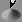
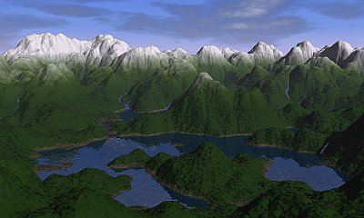
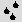
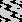

Geomorph - un éditeur de relief pour
Linux
Bienvenue
Lancement de
la version 0.50 (le 1er août 2008)
Correction d'une erreur de
segmentation
dans le crayon continu (le 17 mars 2007)
Lancement de
la version
0.40 (le 21 février 2007)
Nouvelles
antérieures
Bienvenue
sur le site
de Geomorph
Le site de Geomorph regroupe tout ce qui s'est écrit comme
guides et tutoriels depuis le lancement de la version 0.11, en 2003.
Si c'est votre premier contact avec Geomorph, n'oubliez pas de
regarder l'introduction,
qui explique
entre autres comment sont fabriquées les cartes de relief.
Consultez aussi la liste des guides et tutoriels dans l'index de la documentation.
Enfin, ne manquez pas la galerie!
Lancement
de la version 0.50 (le 1er août 2008)
Je suis heureux d'annoncer la version 0.50 qui, en plus de corriger
plusieurs bogues, offre ces améliorations:
- Un nouvel "Explorateur
de Fourier" montre en 3D la transformée de Fourier
d'un terrain et permet d'en manipuler les
fréquences d'une façon intuitive. Voyez
quelques explications ici.
Je dois créditer Antonio Larrosa Jiménez, auteur de kfourier, pour le
code de l'algorithme FFT ("Fast Fourier Transform"), que j'ai recyclé
en le convertissant de C++ à C.
- Pour
ceux qui n'aiment pas une interface à plusieurs fenêtres comme celle de
Gimp (et à la suggestion insistante d'un utilisateur!), Geomorph peut
maintenant être configuré pour offrir une interface
intégrée. C'est d'ailleurs le défaut lors d'une nouvelle installation.
L'option peut être modifiée dans
le fichier geomorphrc.
- Le
script d'installation de l'icône de Geomorph sur le bureau Gnome ou KDE
a été ajusté au standard freedesktop.org.
Le script devrait maintenant
fonctionner avec toutes les distributions récentes.
- En
mode "interface Gimp", il est maintenant possible de configurer
Geomorph pour répéter le menu principal sur chaque fenêtre de document,
en modifiant le fichier geomorphrc.
- On
peut changer le terrain par défaut généré lors de la création d'un
nouveau document en modifiant les options du fichier geomorphrc.
De plus, lors d'une nouvelle installation, le
terrain par défaut n'est plus un canevas gris uniforme, destiné au
dessin de montagnes et de vallées, mais un terrain aléatoire de type
"subdivision 2".
- La gestion des répertoires par défaut, qui peuvent être
spécifiés dans geomorphrc,
a été revue.
- Geomorph a été testé sous Ubuntu 7.10 64 bits et adapté. La
version 0.40 était compilable sans erreurs sous une architecture x64,
mais certaines fonctions n'avaient pas le
comportement attendu.
- Plusieurs
petites améliorations ont été faites, comme le retrait du bouton
"activer" dans la "subdivision 2" et à quelques autres endroits
(l'activation se fait au relâchement du bouton de souris), ainsi que
des fenêtres découlantes dans certains dialogues trop étendus.
- La FAQ a été
complétée avec une question concernant une situation où POV-Ray ne
fonctionne pas.
J'ai aussi tenté d'améliorer la présentation du site en utilisant des
CSS.
Je
remercie sincèrement Simon Donike, qui encore une fois, en plus de
traduire les dialogues en allemand, m'a aidé à résoudre plusieurs
problèmes en essayant la version 0.50 préliminaire.
Pour
les prochaines versions, j'ai l'intention de travailler sur des
fonctions d'import / export et de mise à l'échelle. Ces fonctions sont
inséparables,
puisque Geomorph n'édite que des images carrées en puissance de 2.
J'aimerais aussi ajouter des
outils de sélection à base de masque et des outils pour aider à la
conception de scènes Povray. Il y aura peut-être une surprise, si mes
disponibilités le permettent. Et je reste ouvert à vos suggestions!
Correction d'une
erreur de
segmentation dans le crayon continu (le 17 mars 2007)
Avec la version 0.40, la modification de la grandeur ou de l'intensité
du crayon
continu  produit une
erreur de segmentation
sur certains systèmes. Le problème a été
détecté dans un environnement x64, mais peut se produire
dans n'importe quel environnement.
En attendant une prochaine version, vous pouvez le corriger en
remplaçant
"draw_dialog.c" du paquetage binaire de 0.40 par ce fichier, avant la
compilation:
http://geomorph.sourceforge.net/misc/draw_dialog.c
Une fois ce fichier téléchargé, ouvrez une console
et copiez-le dans l'arborescence de Geomorph :
cp
draw_dialog.c
~/geomorph-0.40/src/hf/draw_dialog.c
Merci à Sanne pour avoir soumis le bogue et testé mes
solutions!
La version
0.40 est
arrivée, enfin! (le 21 février 2007)
Après plus d'un an, voici enfin Geomorph
0.40, qui vous propose
quelques ajouts importants, plusieurs correctifs et une documentation
enrichie.
Voici les principaux ajouts:
Geomorph n'est pas un logiciel qui peut être
abordé d'une façon aussi intuitive qu'un traitement de
texte. Des tutoriels et des guides sont généralement
nécessaires. Cette
version propose entre autres:

Enfin, de nombreux correctifs et améliorations ont
été apportés, dont plusieurs en préparant
les tutoriels. En voici quelques-uns :
- L'algorithme d'érosion par la pluie 
a
été amélioré d'une façon importante.
Quelques explications sont données dans l'index des outils.
- Les scripts de compilation ont été mis à
jour pour permettre une compilation sous un processeur x64 et sous
Fedora 5, notamment (merci à Andy Pfiffer).
- Dans l'outil "ondes" , le paramètre de
randomisation ne crée plus de discontinuité.
- La fiabilité du mécanisme d'acceptation automatique
des changements, lors du passage d'un dialogue à l'autre ou
d'une fenêtre à l'autre, a été
améliorée.
- Au sujet de la fenêtre de document:
- la position (x,y) et
l'altitude sous le curseur sont dorénavant toujours
affichés dans le coin supérieur gauche, pas seulement
lorsque le crayon est utilisé
- après un agrandissement, le terrain est
maintenant centré dans la fenêtre.
Comme pour les dernières versions, les messages et dialogues ont
été traduits en allemand par Simon Donike.
À une prochaine, avant un an je l'espère!
Retour au début
Contact:
Patrice
St-Gelais